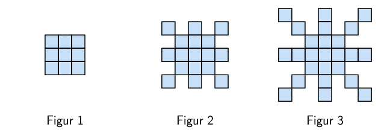
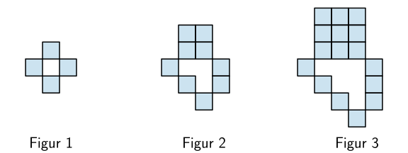
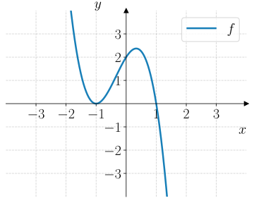

Oppgaver: Programmering av tallfølger#
Oppgave 1#
Ta quizen!
Oppgave 2#
Nedenfor vises noen programkoder som skriver ut noen tall. Les programmene og prøv å forutsi hvilke tall de skriver ut.
Skriv inn gjetningen din og sjekk svaret ditt for hvert av programmene.
Oppgave 3#
Fyll ut programmet nedenfor slik at det skriver ut alle tallfølgen
1for n in range(1, 9):
2 print(n)
Fyll ut programmet nedenfor slik at det skriver ut tallfølgen
1for n in range(2, 10, 2):
2 print(n)
Fyll ut programmet nedenfor slik at det skriver ut tallfølgen
1for n in range(1, 14, 4):
2 print(n)
Fyll ut programmet nedenfor slik at det skriver ut tallfølgen
1for n in range(-5, 6, 2):
2 print(n)
Oppgave 4#
Fyll ut programmet nedenfor slik at det skriver ut tallfølgen
1for n in range(10, 1, -4):
2 print(n)
Fyll ut programmet nedenfor slik at det skriver ut tallfølgen
1for n in range(100, -1, -10):
2 print(n)
Fyll ut programmet nedenfor slik at det skriver ut tallfølgen
1for n in range(5, -6, -2):
2 print(n)
Fyll ut programmet nedenfor slik at det skriver ut tallfølgen
1for n in range(-2, -15, -3):
2 print(n)
Oppgave 5#
Fyll ut programmet nedenfor slik at det skriver ut alle partallene til og med \(20\).
1for n in range(2, 21, 2):
2 print(n)
Fyll ut programmet nedenfor slik at det skriver ut alle oddetallene til og med \(21\).
1for n in range(1, 22, 2):
2 print(n)
Lag et program som skriver ut de \(20\) første partallene.
for n in range(1, 21):
partall = 2 * n
print(partall)
Lag et program som skriver ut de \(20\) første oddetallene.
1for n in range(1, 21):
2 oddetall = 2 * n - 1
3 print(oddetall)
Oppgave 6#
Alma og Synne snakker om en annen strategi for å skrive ut partall og oddetall.
Jeg har en annen idé for å skrive ut partallene på. Vi kan lage en løkke som går gjennom alle naturlige tall og sjekker om det er et partall.
Det er en god idé! Da kan vi bruke en if-setning for å sjekke om tallet er partall.
Men hvordan sjekker vi at et tall er et partall igjen?
Det er vel bare å sjekke om det er delelig med \(2\)? Jeg har lest at det kan man gjøre ved å skrive
if n % 2 == 0:
Fyll ut programmet nedenfor slik at det skriver ut alle partallene til og med \(20\) ved hjelp av en if-setning.
1for n in range(1, 21, 1):
2 if n % 2 == 0: # Sjekk om n er et partall
3 print(n)
Alma og Synne fortsetter samtalen.
Ok, så nå klarer vi å skrive ut partall ved å sjekke om et tall er delelig med \(2\). Men hva med oddetallene?
Da har jeg lest at vi kan bruke en if-else-setning. Hvis tallet er delelig med \(2\), så gjør vi ingenting. Da kan vi bruke pass. Og så skriver vi ut tallet hvis det ikke er delelig med \(2\).
Bruk strategien til Alma og Synne i programmet nedenfor til å skrive ut alle oddetallene under \(20\).
1for n in range(1, 21, 1):
2 if n % 2 == 0: # Sjekk om n er et partall
3 pass # Gjør ingenting
4 else:
5 print(n) # Skriver ut oddetallet.
Oppgave 7#
Alma og Synne snakker om hvordan man kan avgjøre om et tall \(p \in \mathbb{N}\) er et primtall med et program.
Jeg har lest at et primtall er et tall som bare er delelig med \(1\) og seg selv.
Ja, det stemmer! Så hvis vi skal sjekke om et tall \(n\) er et primtall, så må vi sjekke om det er delelig med alle tallene fra \(2\) til \(p - 1\).
Ja, men hvordan gjør vi det i et program?
Vi kan bruke en løkke som går gjennom alle tallene \(n \in \{2, 3, \ldots, p - 1\}\) og sjekker om \(p\) er delelig med hvert av dem. Da kan vi vel bruke en if-setning litt som når vi sjekket om et tall var delelig med \(2\)?
Bruk strategien til Alma og Synne i programmet nedenfor. Sjekk at tallene \(11\), \(51\) og \(729\) er primtall.
Alma og Synne er ikke helt fornøyde.
Men nå sjekker vi jo fryktelig mange tall. Trenger vi å sjekke alle tallene fra \(2\) til \(p - 1\)?
Nei! Vi trenger bare å sjekke tallene opp til \(\sqrt{p}\). Hvis \(p\) er delelig med et tall større enn \(\sqrt{p}\), så må det også være delelig med et tall mindre enn \(\sqrt{p}\).
Hvorfor er det slik?
Det er jeg ikke sikker på. Var bare noe jeg så på Insta. Men hvordan regner vi ut \(\sqrt{p}\) i et program?
Det er enkelt! Vi kan bruke int(n ** 0.5)
Endre på programmet ditt fra oppgave a og bruk strategien de snakker om.
Argumenter for at det største tallet man trenger å sjekke for å avgjøre om et tall \(p\) er et primtall, er \(\sqrt{p}\).
Oppgave 8#
I denne oppgaven skal du lære hvordan man summerer tall med et program.
Når man skriver s = s + n, så legger man til \(n\) i variabelen \(s\).
I programmet nedenfor summeres noen tall.
Avgjør hvilket tall programmet skriver ut og kjør programmet for å sjekke svaret ditt.
Endre på programmet slik at det regner ut summen
1s = 0 # variabel som skal lagre summen
2for n in range(1, 101):
3 s = s + n
4
5print(s)
Endre på programmet slik at det regner ut summen
1s = 0 # variabel som skal lagre summen
2for n in range(1, 101, 2):
3 s = s + n
4
5print(s)
Endre på programmet slik at det regner ut summen
1s = 0 # variabel som skal lagre summen
2for n in range(2, 101, 2):
3 s = s + n
4
5print(s)
Oppgave 9#
En sum er gitt ved
Lag et program som skriver ut de første 5 leddene i summen.
1for n in range(5):
2 a = 1 / 2**n
3 print(a)
Lag et program som regner ut summen av de 5 første leddene.
1s = 0
2for n in range(5):
3 a = 1 / 2**n
4 s = s + a
5
6print(s)
Bruk programmet ditt til å bestemme hvilken verdi summen nærmer seg når vi bruker veldig mange ledd.
1s = 0
2for n in range(10_000):
3 a = 1 / 2**n
4 s = s + a
5
6print(s)
Kjører vi programmet får vi \(2.0\) som betyr at summen nærmer seg \(2\) når vi bruker veldig mange ledd.
Oppgave 10#
Alma og Synne jobber med summen
Jeg vet hvordan vi kan regne ut summen når alle leddene er positive, men nå er jo leddene positive og negative annen hver gang.
Kan vi ikke bare bruke en if-else-setning sånn at programmet bytter på fortegnet annen hver gang da?
Jo! Er ikke det litt som å bare sjekke om et tall er delelig med \(2\) da?
Det tror jeg vil funke!
Ta utgangspunkt i ideen til Alma og Synne, og lag et program som skriver ut de 5 første leddene i summen.
Lag et program som regner ut summen av de 5 første leddene.
Bruk programmet ditt til å bestemme hvilken verdi programmet nærmer seg når vi bruker veldig mange ledd.
Oppgave 11#
Nedenfor ser du tre figurer. Figurene er satt sammen av små kvadrater.
Tenk deg at du skal fortsette å lage figurer etter samme mønster. Vi lar \(K_n\) være antall små kvadrater i figur \(n\).
{kind=link}

Bestem en formel for \(K_n\).
Lag et program som regner ut og skriver ut hvor mange små kvadrater det er i hver av de \(10\) første figurene.
Du starter med å lage figur \(1\), så figur \(2\), deretter figur \(3\), og så videre.
Lag et program som finner ut hvor mange kvadrater du må bruke for å lage de 10 000 første figurene.
Oppgave 12#
Nedenfor ser du tre figurer. Figurene er satt sammen av små kvadrater.
Tenk deg at du skal fortsette å lage figurer etter samme mønster. Vi lar \(K_n\) være antall små kvadrater i figur \(n\).
{kind=link}

Bestem en formel for \(K_n\).
Lag et program som beregner og skriver ut hvor mange små kvadrater det er i hver av de \(20\) første figurene.
Tenk deg at du har 1 000 000 små kvadrater. Du starter med å lage figur \(1\), så figur \(2\), deretter figur \(3\), og så videre.
Lag et program som finner ut
Hvor mange figurer du kan lage
Hvor mange små kvadrater du har igjen
Oppgave 13#
I denne oppgaven skal du jobbe med summer av oddetall og partall.
Vi lar \(S_n\) være summen av de \(n\) første oddetallene slik at
Lag et program som skriver ut de \(20\) første oddetallene. Bruk formelen for oddetallene gitt ved
1for n in range(1, 21):
2 oddetall = 2 * n - 1
3
4 print(oddetall)
Lag et program som skriver ut \(S_1, S_2, S_3, \ldots, S_{20}\).
1s = 0
2for n in range(1, 21):
3 oddetall = 2 * n - 1
4 s = s + oddetall
5
6 print(s)
La \(P_n\) være summen av de \(n\) første partallene.
Lag et program som skriver ut \(P_1, P_2, P_3, \ldots, P_{20}\).
1p = 0
2for n in range(1, 21):
3 partall = 2 * n
4 p = p + partall
5
6 print(p)
Oppgave 14#
Anna og Nicolai jobber med å lage et program som regner ut \(n\)-fakultet, som vi skriver som \(n!\), definert med formelen:
For eksempel er
Når vi regner ut summer, så setter vi en variabel s = 0 på starten av programmet, og så legger vi til leddene ved å skrive s = s + ledd.
Ja, kanskje vi bare kan bytte ut plusstegnet med et gangetegn da?
Men hvis s er 0 i starten, så blir jo svaret alltid 0?
Ja, men vi startet med 0 fordi å plusse på 0 endrer ikke summen. Hvilket tall er det som ikke endrer verdien til et produkt?
Ta utgangspunkt i dialogen mellom Anna og Nicolai og lag et program som regner ut \(5!\).
1s = 1
2for n in range(1, 6):
3 s = s * n
4
5print(s)
Antall måter å stokke en kortstokk på er \(52!\)
Bruk programmet ditt til å regne ut \(52!\).
Kan du forklare hvorfor det sannsynligvis stemmer at når man stokker en kortstokk, så er det nesten umulig å få samme rekkefølge som en annen gang?
1s = 1
2for n in range(1, 53):
3 s = s * n
4
5print(s)
som gir utskriften
80658175170943878571660636856403766975289505440883277824000000000000
Oppgave 15#
Nedenfor vises et kvadrat med sidelengder \(3\).
Kvadratet er fylt med mindre fargelagte kvadrater som blir mindre og mindre.
Lag et program som skriver ut arealet til de \(10\) største fargelagte kvadratene i figuren.
1s = 3
2for n in range(1, 11):
3 s = s / 2
4
5 print(s**2)
Lag et program som skriver regner ut summen av arealene til de \(100\) største fargelagte kvadratene i figuren.
1areal = 0
2s = 3
3for n in range(1, 101):
4 s = s / 2
5 areal = areal + s**2
6
7
8print(areal)
Oppgave 16#
Nedenfor vises en figur som er satt sammen av uendelige mange linjestykker.
Lengden til et linjestykke er alltid \(90 \%\) av lengden til det forrige linjestykket. Det første linjestykket er \(100\) cm langt.
Lag et program som skriver ut lengden til de \(10\) første linjestykkene i figuren.
1l = 100
2for n in range(1, 11):
3 print(l)
4
5 l = 0.9 * l
Lag et program som regner ut summen av lengdene til de \(100\) første linjestykkene i figuren.
1s = 0
2l = 100
3for n in range(1, 101):
4 s = s + l
5 l = 0.9 * l
6
7print(s)
Lag et program som finner hvor mange linjestykker du må sette sammen for at figuren skal være minst \(9\) meter.
Oppgave 17#
Nedenfor vises tre figurer som følger et bestemt mønster.
La \(K_n\) være antall små kvadrater i figur \(n\).
{kind=link}

Bestem en formel for \(K_n\).
Lag et program som skriver ut \(K_1\), \(K_2\), \(K_3\), \(\ldots\), \(K_{20}\).
Lag et program som regner ut hvor mange små kvadrater du må bruke for å lage de 20 første figurene.
Oppgave 18#
Å regne ut \(\pi\) med så mange desimaler som mulig har vært et mål for matematikere i over tusen år. En måte å komme fram til verdien til \(\pi\) på er med summen
Jo flere ledd man bruker, jo nærmere kommer man verdien til \(\pi\).
Lag et program som skriver ut de \(5\) første leddene i summen.
Du bør få disse verdiene i utskriften:
4.0
-1.3333333333333333
0.8
-0.5714285714285714
0.4444444444444444
1pi = 0
2
3for n in range(1, 6):
4 if n % 2 == 0: # Hvis n er delelig med 2. Ledd 2, 4, 6, osv.
5 ledd = -4 / (2 * n - 1)
6 else: # n er ikke delelig med 2. Ledd 1, 3, 5, osv.
7 ledd = 4 / (2 * n - 1)
8 print(ledd)
Lag et program som summerer de \(5\) første leddene i tallfølgen.
1pi = 0
2
3for n in range(1, 6):
4 if n % 2 == 0: # Hvis n er delelig med 2. Ledd 2, 4, 6, osv.
5 ledd = -4 / (2 * n - 1)
6 else: # n er ikke delelig med 2. Ledd 1, 3, 5, osv.
7 ledd = 4 / (2 * n - 1)
8
9 pi = pi + ledd # Legger til leddet i summen
10
11print(pi)
Bestem en god tilnærming til \(\pi\) med programmet ditt fra b.
Hvor mange ledd trenger du for å få \(\pi\) med \(5\) riktige desimaler?
Oppgave 19#
Summen av en annen tallfølge nærmer seg også \(\pi\), men mye raskere enn den forrige. Summen er
Lag et program som skriver ut de \(5\) første leddene i summen.
Du bør få utskriften:
3
0.16666666666666666
-0.03333333333333333
0.011904761904761904
-0.005555555555555556
1pi = 3
2print(pi)
3
4for i in range(1, 5):
5 nevner = (2 * i) * (2 * i + 1) * (2 * i + 2)
6 if i % 2 == 0:
7 ledd = -4 / nevner
8 else:
9 ledd = 4 / nevner
10
11 print(ledd)
Lag et program som regner ut en tilnærming til \(\pi\) ved å bruke de 10 000 først leddene i summen.
1pi = 3
2for i in range(1, 10_000):
3 nevner = (2 * i) * (2 * i + 1) * (2 * i + 2)
4 if i % 2 == 0:
5 ledd = -4 / nevner
6 else:
7 ledd = 4 / nevner
8
9
10 pi = pi + ledd
11
12
13print(pi)
som gir utskriften
3.1415926535900383
Oppgave 20#
En rask måte å komme fram til sifrene til \(\pi\) er ved ta utgangspunkt i kjedebrøken nedenfor:
Regn ut en tilnærming til \(\pi\) ved å bruke \(3\) ledd i kjedebrøken:
Lag en algoritme du kan bruke til å skrive et program som regner ut verdien til \(\pi\) ved å bruke \(n\) ledd i kjedebrøken.
Lag et program med utgangspunkt i algoritmen din fra b og regn ut en tilnærming til \(\pi\).
1N = 100 # Antall ledd i kjedebrøken
2nevner = 2 * N - 1 # først nevner
3
4for n in range(N - 1, 0, -1): # Starter med det siste leddet
5 nevner = 2 * n - 1 + n**2 / nevner # neste nevner
6
7pi = 4 / nevner
8
9print(pi)